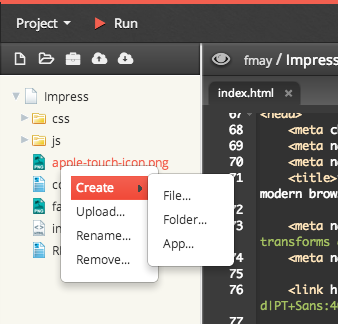

Creating a Folder
Creating a new folder is done in one of two ways:
- Right-click within the file tree, taking into account the existing folder structure
- Press the new folder button in the toolbar above the file tree; the new folder will be created at the same level as the currently selected file
